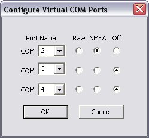

This
update installs the DeLorme Serial Emulation Driver so that the USB
Earthmate GPS, Earthmate GPS LT-20, Earthmate GPS PN-20, and Earthmate
GPS BT-20 can be recognized in NMEA 0183 compliant mapping applications.
Note:
This driver is not for use with the 64bit version of Windows. This
driver is also not supported when coming out of sleep or hibernation
mode.
To Download and Install the Update
Before
installing this update, plug the Earthmate GPS into an available USB
Port to allow Windows to recognize the GPS as an HID device.
- Click Download Now at the bottom of this list.
- Save the file to the desktop.
- Locate DeLorme Serial Emulator1.1.exe and double-click it.
- Click Next.
- Select the "I accept the terms of this license agreement" option.
- Click Next.
- Restart the computer when prompted.
Note: The installation will resume once the computer has restarted.
- Click Next.
- Click Finish.
- Right-click on the DeLorme Serial Emulator system tray icon and select Ports... from the pop-up menu.
- Select NMEA next to the COM Port you wish to use and close the utility.
- Open the mapping application.
- In
the GPS Settings, select NMEA as the device and the COM port you
selected in step 11 as the COM port the device is connected to.
- Start the GPS.
Download Now (14 MB)
About the DeLorme Serial Emulator
The
DeLorme Serial Emulator is a system tray utility that provides access
to the settings and status of an Earthmate reciever. You can also use
the Configure Virtual COM Ports utility to assign up to three different
COM Ports for the Earthmate GPS reciever. The Earthmate GPS reciever
can be configured to work with up to three different applications at
the same time.
The utility contains the following items:
- About - Shows the version of the utility.
- Monitor... - Opens the Monitor GPS Status window.
- Ports... - Allows you to configure the Virtual COM Ports.

- Auto-Start - Automatically starts the GPS when it is plugged in.
- Start - Starts the GPS.
- Stop - Stops the GPS.
- Exit - Exits the utility.